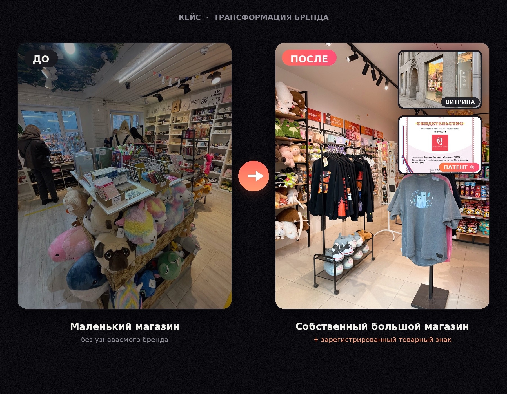
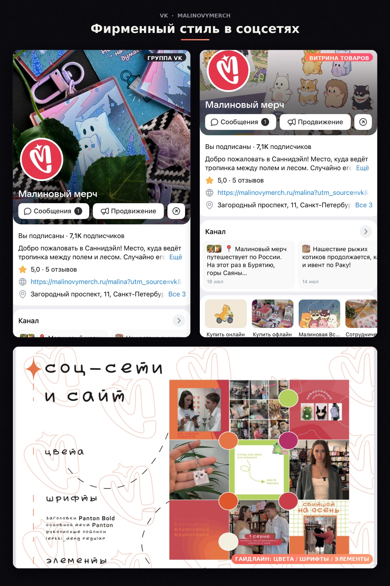
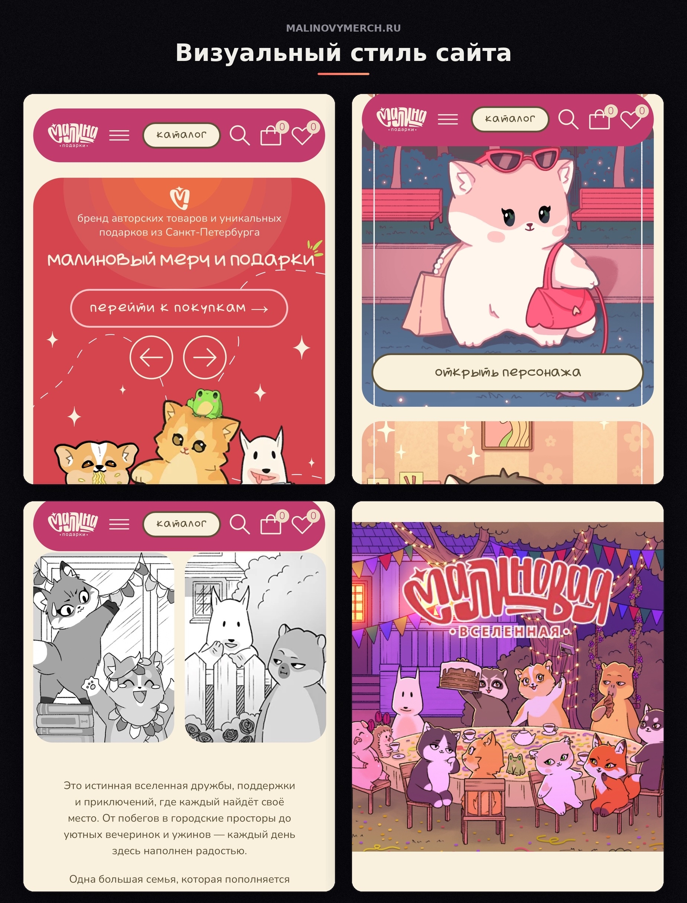

Бренд начинал как небольшой магазин подарков с товарами китайского производства. Нужно было сформировать более узнаваемый образ и коммуникацию вокруг нового позиционирования.
Участвовала в переходе к авторскому бренду с собственной вселенной персонажей, визуальным стилем и оригинальными продуктами. Моя зона ответственности:


